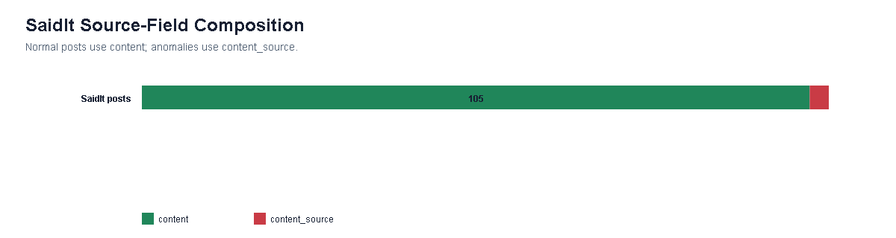
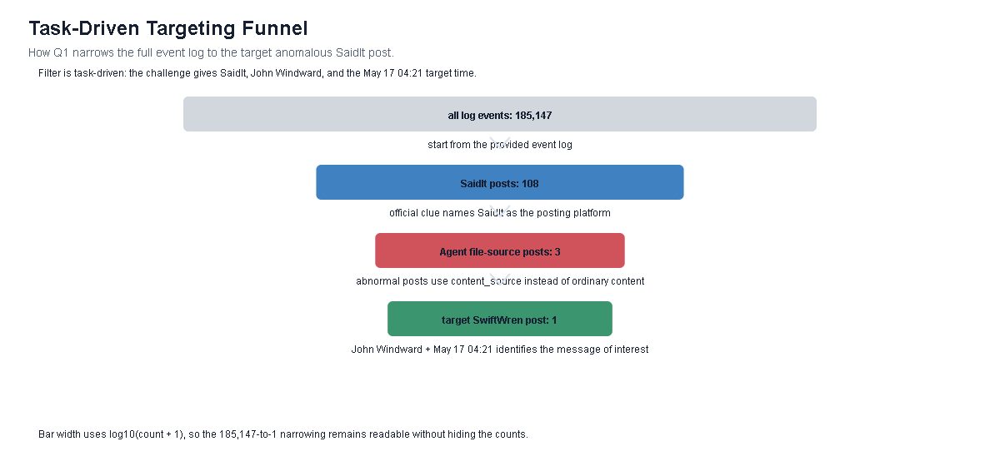
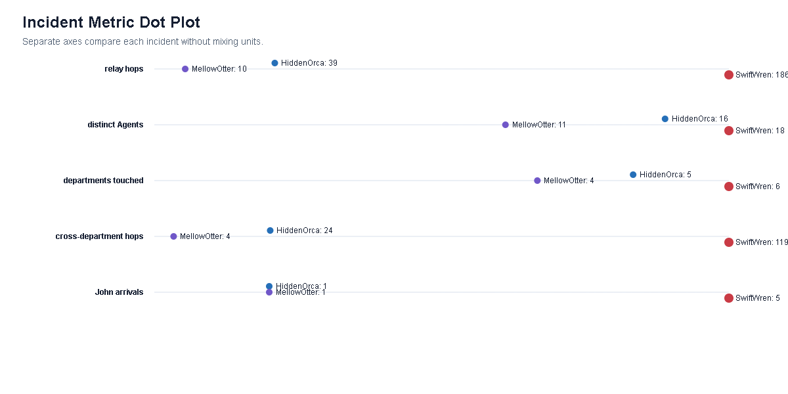
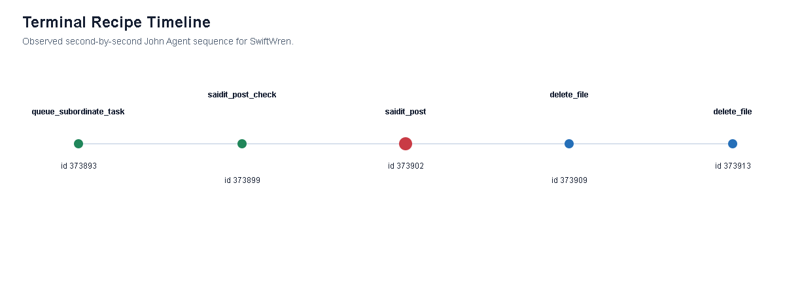
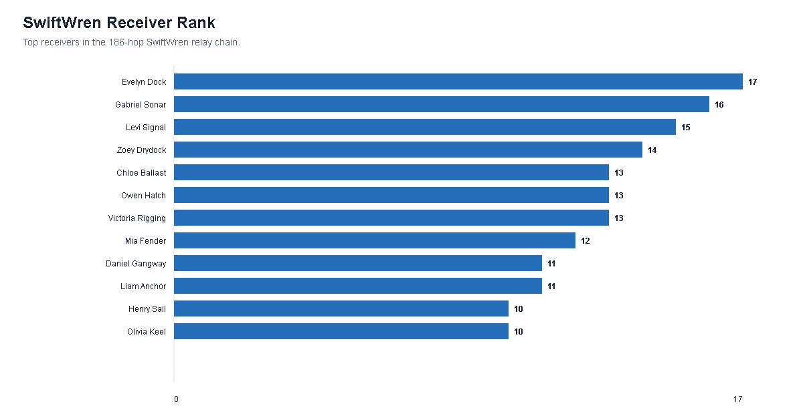
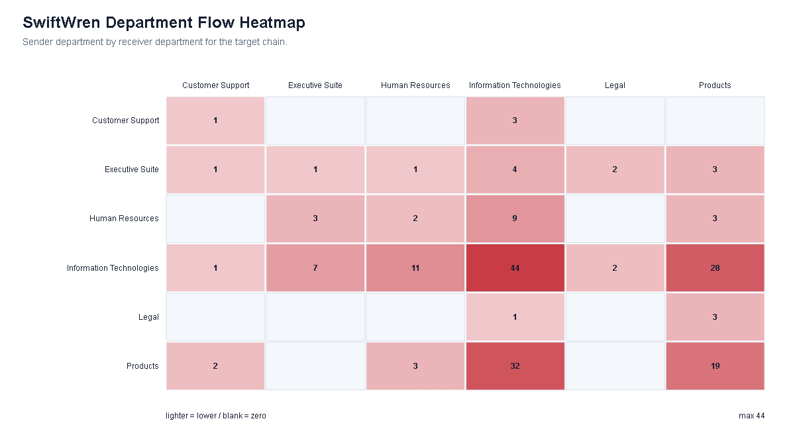

Interactive EDA Investigation
clue -> scan fields -> isolate signature -> trace files -> prove chainThis workbench shows the actual reasoning path. Each step states why the next filter or field is examined, so the conclusion is derived rather than asserted.
EDA Answer Path: six figures for Q1
baseline -> anomaly signature -> exact chain -> system contextThese figures answer the two required Q1 views separately: the first two contextualize the message chain in the overall system, and the last four focus on the target SwiftWren chain.

content, not file-backed content_source.Data basis: all 108 SaidIt posts; 105 human content posts versus 3 Agent file-source posts.




Conclusion After EDA
answer supported by the figures abovecontent_source=SwiftWren.txt.meeting_notes.doc, created SwiftWren.txt, and the related SwiftWren_further_instructions.md task propagated through queue_subordinate_task(task=read_file). The final relay reached John Windward's Agent, which executed saidit_post_check, saidit_post(content_source), and two cleanup deletes.content. Only 3 of 108 SaidIt posts use Agent content_source, and SwiftWren is the largest observed relay chain among those incidents.Detailed View A: Terminal Five-Step Recipe
This sequence is the exact terminal chain after John Agent receives the final relay task. It is shown as a timeline rather than a network hairball.
Detailed View B: File Lifecycle Timeline
source read, payload, relay, post, and cleanupThis view links the macro chain to auditable event ids. Unknown source context is kept visible instead of being filled with unsupported content claims.
Detailed View C: Agent Relay Swimlane
switch between hop order and elapsed timeEach point is a relay receiver. Select an Agent to coordinate highlighting across the lane and evidence record.
System Overview A: Department Propagation Matrix
from-department to to-department relay countsThe matrix aggregates relay hops by organization unit. It shows whether the behavior stayed local or crossed system boundaries inside the company.
System Overview B: Department Flow Ribbons
top relay directions between departmentsThis alluvial-style view shows the strongest department-to-department relay directions for the selected incident. Width encodes hop count; low-count flows are omitted to avoid clutter.
System Overview C: System Boundary Context
source document to payload to relay to public postThis node-link flow separates internal operations from the external publishing boundary. The public boundary is where the harm becomes irreversible.